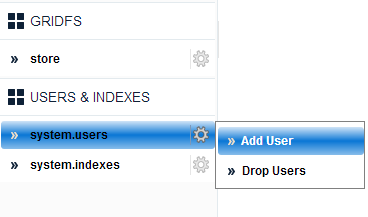
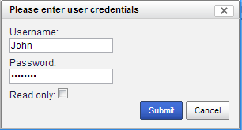
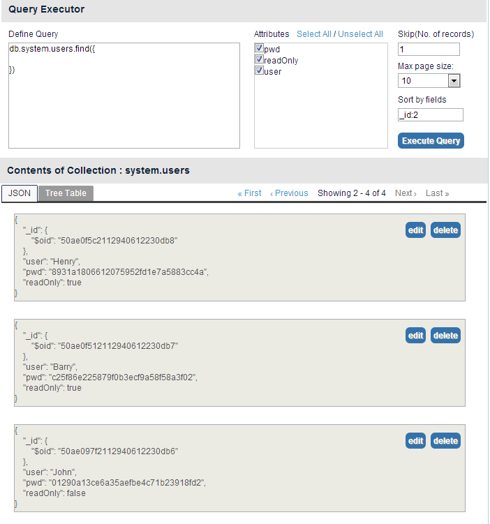

- Hover on the USERS & INDEXES tab.
- Click System.users > Add User as shown in the figure below.

The Please enter user credentials dialog box appears.
- Enter the credentials as shown in the figure below.

- Select Read only if you do not wish to give write access permissions.
 The user is now created and can login to mViewer with the newly created credentials.
The user is now created and can login to mViewer with the newly created credentials.
- Click Submit. The system displays the Query Executor window displaying user attributes. See Figure below.

- In the Define Query box, you can add a query you wish to. <need more inputs for this>
- In the Attributes section, you can configure user properties as shown above.
- You can configure field information using the following fields:
- Skip(No. of records)
- Max pace size
- Sort by fields
- Click Execute Query
Depending on the values given, the records display in the JSON view as shown in the figure above.
previousnext